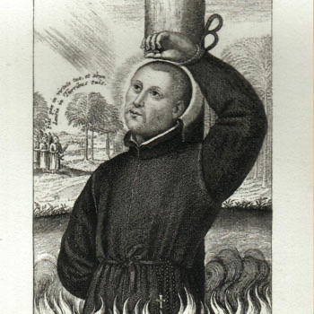

Isusovački blaženici
Svećenik
Bl. Baltazar de Torres
1563. – 1626.
Španjolski isusovac nakon studija u Aziji četvrt stoljeća služio je u Japanu. Ostao je u zemlji za progona i bio uhićen s vjeroučiteljem.
Tekst je preveden i prilagođen uz pomoć umjetne inteligencije.

Izvor slike
- Spomendan
- 6. veljače
- Zaštitništvo
- Nije navedeno u izvoru
- Životni vijek
- 1563. – 1626.
- Djelovanje
- Misije i evangelizacija · Obrazovanje i poučavanje vjere · Progoni i progonstvo · Mučeništvo
- Razdoblje
- 16., 17. stoljeće
- Ulazak u Družbu Isusovu
- 1579.
- Rođenje — dostupni podaci
- 1563.; dan i mjesec nisu potvrđeni u provjerenom izvoru.
- Mjesto rođenja
- Granada, Španjolska
- Datum smrti
- 20.06.1626.
- Mjesto smrti/mučeništva
- Brdo mučenika (Nishizaka), Nagasaki, Japan
- Okolnosti smrti/mučeništva
- Spaljen na lomači zajedno s Franjom Pachecom i drugovima, za progona kršćana.
- Uloga
- Svećenik
- Mučenik
- Da
- Ostale oznake
- Član skupine Franje Pacheca i drugova
- Pripadnost
- Isusovac
- Drugi oblici imena
- Balthasar de Torres · Balthasar
Životopis
Baltazar de Torres rođen je 1563. u Granadi. U Družbu Isusovu ušao je 1579., sa šesnaest godina. Put ga je odveo u Aziju: studirao je u Goi i Macau, a nakon svećeničkoga ređenja predavao u sjemeništu. U Japan je stigao 1600. i ondje proveo četvrt stoljeća u misijskoj službi.
Širi povijesni okvir bila je zabrana kršćanskoga poslanja iz 1614. Dio misionara otišao je u progonstvo, a dio ostao ili se poslije potajno vratio. Služba se nastavila u skrovištima i privatnim domovima, često noću, uz opasnost i za domaćine. Povijest japanske Crkve toga vremena zato uključuje zajedno strane svećenike, domaće katehiste i vjernike koji su ih primali.
Torres nije napustio Japan nakon naloga za protjerivanje. Nastavio je potajno služiti kršćanima, sve dok nije otkriven zajedno s katehistom Michaelom Tozóm. Uhvaćeni su 20. ožujka 1626. u selu blizu Nagasakija i odvedeni u zatvor u Ōmuri. Njegov život povezuje svećeničku formaciju i nastavu u portugalskoj Aziji s dugotrajnim misijskim radom u Japanu. Mučeništvo je podnio 20. lipnja 1626.
Život i nasljeđe
Torresovo školovanje u Goi i Makau pripadalo je azijskoj obrazovnoj mreži Družbe, a ne samo usputnim pristaništima. Prije japanske službe i sam je poučavao u sjemeništu. Njegova povezanost s Mihaelom Tozom stoga se nadovezala na dugotrajno iskustvo učitelja i misionara. U kasnijim popisima skupine iz 1626. treba razlikovati mjesto zajedničkoga zatočenja u Ōmuri od mjesta pogubljenja u Nagasakiju. Takvo razdvajanje čuva zemljopisni tijek njegova posljednjeg poslanja.
Tekst je preveden i prilagođen uz pomoć umjetne inteligencije.
Pročitaj više na izvornoj stranici ↗